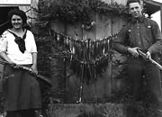
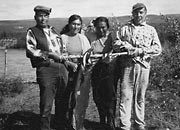
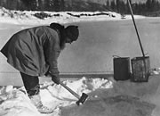
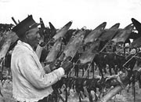
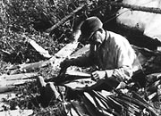
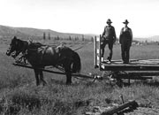

Au Yukon, le climat rigoureux et le terrain inhospitalier obligent les habitants à faire preuve d’ingéniosité et de talent. Traditionnellement, les Premières nations mènent des activités saisonnières, se déplaçant d’un endroit à l’autre. Le choix d’un emplacement où habiter dépendait de la disponibilité des ressources.
Il y avait une grande quantité de ressources naturelles dans le territoire. À l’année, on chassait le gros gibier comme l’orignal, le caribou et le mouflon. Durant l’été, on séchait le spermophile arctique pour s’en nourrir à l’année. On chassait également le lièvre et on piégeait le lynx, la martre, le renard, le carcajou et le loup. Le saumon et le corégone faisaient partie intégrante de l’alimentation.
Les groupes s’adaptaient rapidement aux changements. Si le gibier était rare, on pouvait se joindre à de la parenté dans une autre région où la chasse était meilleure. La quête de nourriture pour assurer la subsistance était continuelle et essentielle à la vie. Rien n’était gaspillé : viande, peau, tendons, os, moelle, sabots, bois et organes internes.
À leur arrivée au Yukon, les étrangers ont adopté et adapté bon nombre des pratiques de subsistance. Cela était particulièrement important durant les premières années lorsque le prix des denrées était élevé, même plus élevé qu’aujourd’hui, et lorsqu’il était difficile de trouver de la nourriture fraîche.
Les activités saisonnières sont encore pratiquées aujourd’hui. De nombreux Yukonnais prennent part à une version modifiée des activités : cueillette de fruits, pêche, jardinage, coupe de bois, mise en boîte et même la fabrication de vêtements à l’aide de poils de chien.
«Sha’kat : Ils s’agit d’une période spéciale en août et en septembre. Nous nous procurons de la nourriture pour l’hiver. C’est comme une récolte.»
Violet Storer, entrevue des Archives du Yukon (1998)
Passer au tableau Bien du plaisirVivre des ressources de la terre
(Ci-dessus) Linch Van Bibber et son groupe de chiens à la demeure estivale de la famille, rivière Tay (1943).
AY, collection Van Bibber, 79/2 nº 109
Dorothy Hoggan et Bill Hare et de l’ombre arctique, Mayo (2 août 1923).
AY, collection Hare nº 6680
George Dawson, Mary Luke, Emma Shorty et Roxy Carriere au camp de pêche de Mary Luke, près de Carmacks (1965).
AY, collection Tanguay, 88/150 nº 2
Le caporal Claude Tidd perce un trou dans la glace pour en tirer de l’eau, région de Twelvemile (vers 1938).
AY, collection Tidd nº 8121
Le chef Peter Moses étirant des peaux de rat musqué (juin 1946).
AY, collection Tidd nº 8242
Charlie Peter Charlie père, qui étire des peaux de rat musqué (vers 1970). La chasse au rat musqué au printemps dans la plaine Old Crow est une partie cruciale de l’économie d’Old Crow.
AY, collection chef Zzeh Gittlit nº 9377
Hommes avec attelage et charrette à Maisy May (juin 1937).
AY, Commission géologique du Canada, 90/36 nº 83100